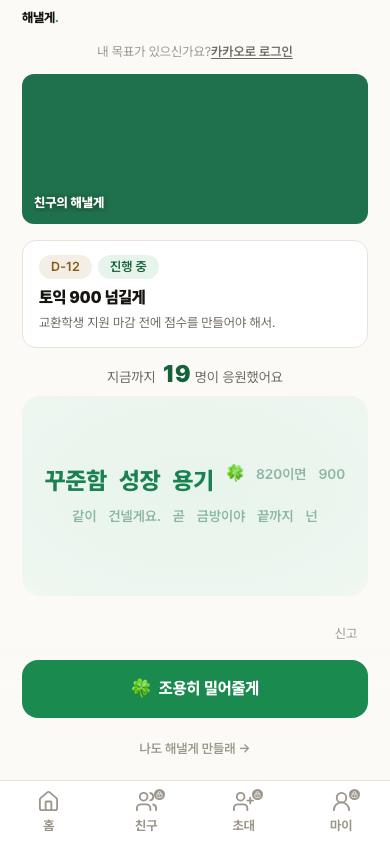
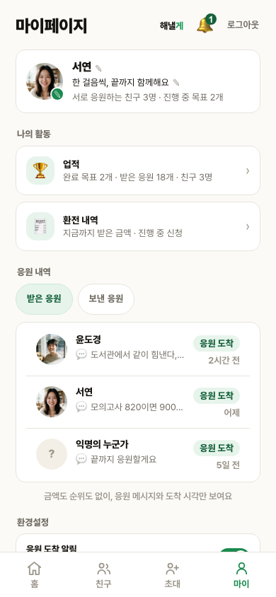
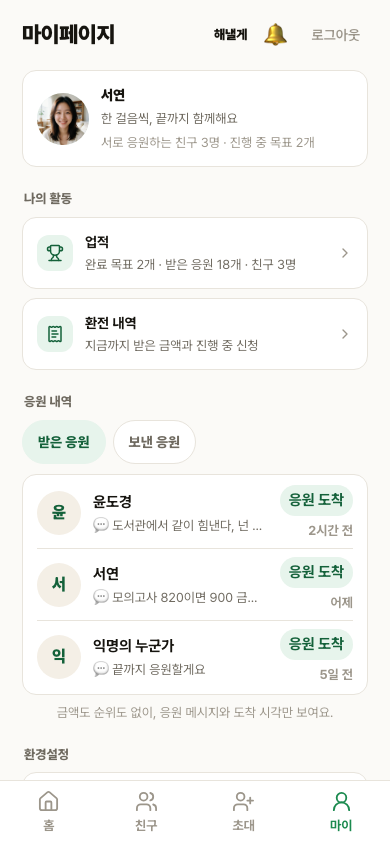
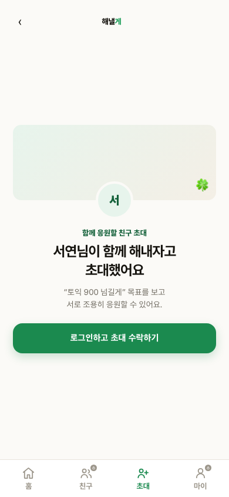
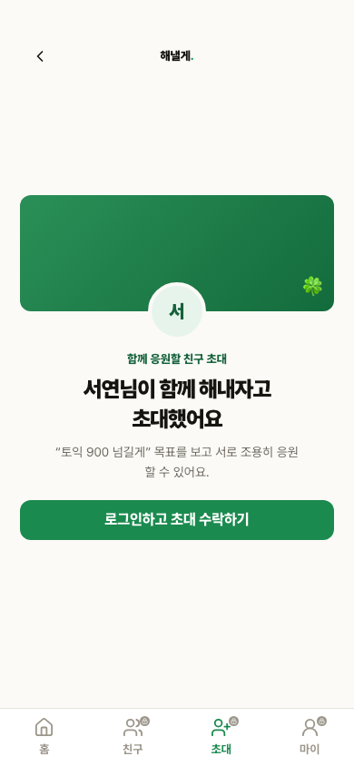
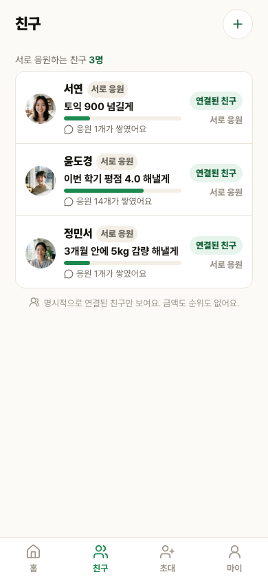
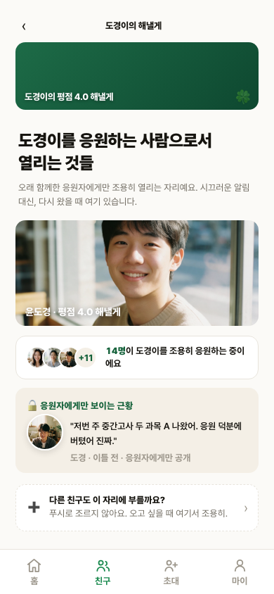
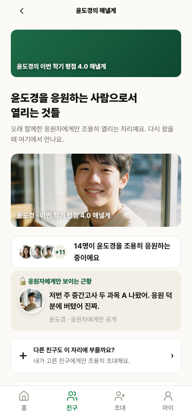

1. 비회원 랜딩 landing일치
브랜드, 제목·설명, 접힘 버튼, 워드맵 프리뷰, 선언 문구, CTA와 하단탭의 위계·폭·간격이 같은 구조로 보입니다.
승인 시안 390px

로컬 구현 390px

2. 공개 목표 goalpublic일치
상단 브랜드와 로그인 안내를 각각 유지했고, cover·목표 카드·응원 수·워드맵·신고·활성 CTA의 순서와 간격이 같습니다. 이름·응원 수·워드맵 단어는 데이터 차이로 제외했습니다.
승인 시안 390px

로컬 구현 390px

3. 마이페이지 mypage일치
헤더, 프로필 카드, 활동 카드 2개, 응원 탭과 응원 행 3개, 안내 문구, 환경설정 진입의 순서·폭·간격이 같습니다. 사용자 데이터는 제외했습니다.
승인 시안 390px

로컬 구현 390px

4. 초대 생성 connect일치
본문 시작선, 인물 사진 crop, 카카오 미리보기의 중앙 아바타 비율·내부 여백, 두 공유 CTA의 아이콘과 높이가 같은 구조로 보입니다.
승인 시안 390px

로컬 구현 390px

5. 초대 수락 inviteaccept일치
128px cover, 32px 아바타 겹침, eyebrow·제목·설명·CTA의 수직 흐름과 CTA 위치가 같은 구조로 보입니다. 초대자와 목표 문구는 데이터 차이로 제외했습니다.
승인 시안 390px

로컬 구현 390px

6. 친구 목록 friends일치
목록은 동일 높이 3행이고 각 행의 아바타·이름·관계·대표 목표·진행 막대·근황·상태 배치가 같습니다. 시안에 없던 추가 목표 pill은 제거했습니다.
승인 시안 390px

로컬 구현 390px

7. 친구 상세 belong일치
응원자 아바타 묶음, 근황 카드 이후 간격, 마지막 재초대 카드의 점선 테두리·아이콘·높이가 같은 구조로 보입니다. 이름·사진·응원 수·근황 문구는 데이터 차이로 제외했습니다.
승인 시안 390px

로컬 구현 390px
